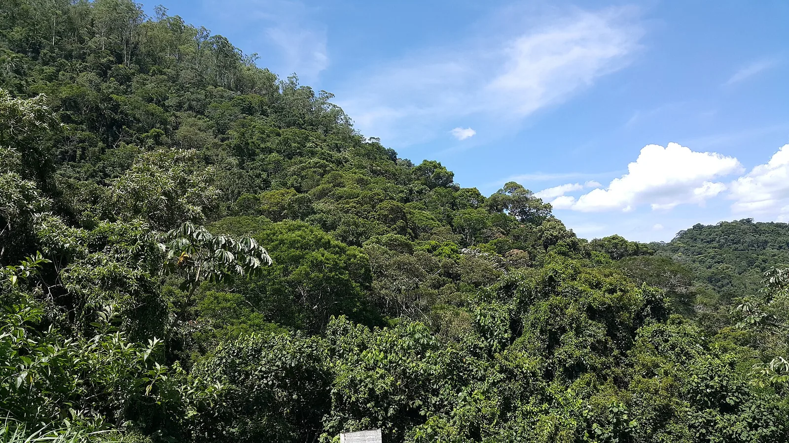
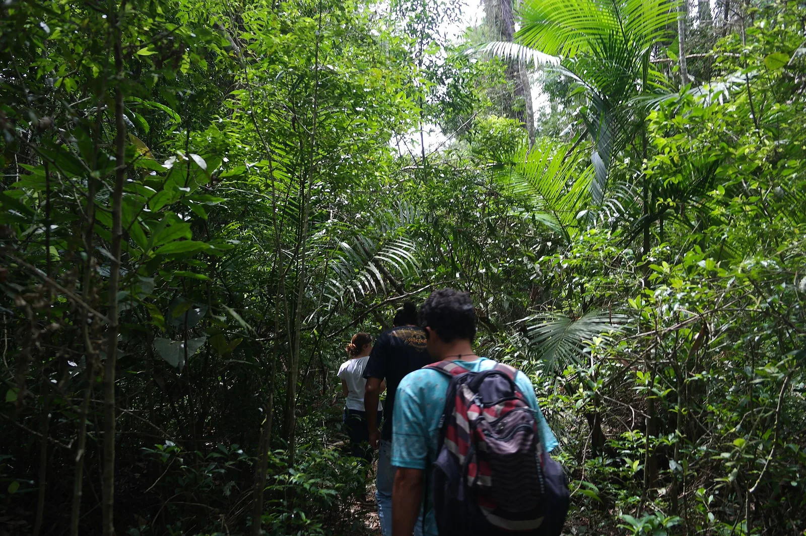
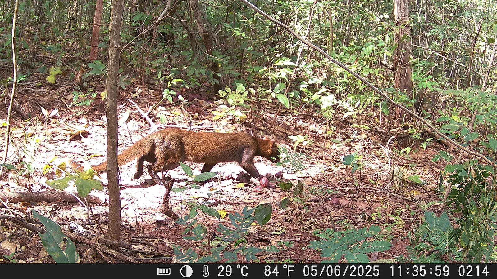

E10 · Este
E10 · Osten
E10 · East
Bosque Atlántico
Información
Information
Information
Un bosque que ya casi no está: de cada diez árboles que había, hoy queda uno. Y en lo que quedaba de ese bosque, gente que tampoco encontró su lugar: familias guaraníes corridas de su propia tierra por el avance de la soja.
Ein Wald, der fast nicht mehr da ist: von je zehn Bäumen, die es gab, steht heute einer. Und in dem, was von diesem Wald übrig blieb, Menschen, die ihren Platz ebenso wenig fanden: Guaraní-Familien, vom eigenen Land vertrieben durch den Vormarsch der Soja.
A forest that is almost gone: of every ten trees there were, one is left today. And in what remained of that forest, people who did not find their place either: Guaraní families driven off their own land by the advance of soy.
El Atlas dos Remanescentes Florestais, que la Fundación SOS Mata Atlântica y el Instituto Nacional de Pesquisas Espaciais publican desde 1985, mide cuánto queda del bosque atlántico brasileño. Del total original permanece alrededor del 24 % de cobertura, pero sólo el 12,4 % corresponde a bosque maduro: fragmentos de más de tres hectáreas con dosel cerrado y sin degradación detectable por satélite.
Los fragmentos mayores a cien hectáreas —los únicos que funcionan como hábitat para las especies raras y los que más carbono almacenan— son apenas el 8,5 % del bosque original. La literatura científica ubica en un 30 % de cobertura el umbral mínimo para conservar el bioma: la Mata Atlántica está muy por debajo.
El Atlas dos Remanescentes Florestais, que la Fundación SOS Mata Atlântica y el Instituto Nacional de Pesquisas Espaciais publican desde 1985, mide cuánto queda del bosque atlántico brasileño. Del total original permanece alrededor del 24 % de cobertura, pero sólo el 12,4 % corresponde a bosque maduro: fragmentos de más de tres hectáreas con dosel cerrado y sin degradación detectable por satélite.
Los fragmentos mayores a cien hectáreas —los únicos que funcionan como hábitat para las especies raras y los que más carbono almacenan— son apenas el 8,5 % del bosque original. La literatura científica ubica en un 30 % de cobertura el umbral mínimo para conservar el bioma: la Mata Atlántica está muy por debajo.
El Atlas dos Remanescentes Florestais, que la Fundación SOS Mata Atlântica y el Instituto Nacional de Pesquisas Espaciais publican desde 1985, mide cuánto queda del bosque atlántico brasileño. Del total original permanece alrededor del 24 % de cobertura, pero sólo el 12,4 % corresponde a bosque maduro: fragmentos de más de tres hectáreas con dosel cerrado y sin degradación detectable por satélite.
Los fragmentos mayores a cien hectáreas —los únicos que funcionan como hábitat para las especies raras y los que más carbono almacenan— son apenas el 8,5 % del bosque original. La literatura científica ubica en un 30 % de cobertura el umbral mínimo para conservar el bioma: la Mata Atlántica está muy por debajo.
Galería
Galerie
Gallery



Fuentes
Quellen
Sources
- Instituto Nacional de Pesquisas Espaciais (INPE), Brasil, Atlas da Mata Atlântica, datos de remanentes forestales — https://www.gov.br/inpe/pt-br/assuntos/ultimas-noticias/atlas-da-mata-atlantica-registra-menor-indice-historico-de-desmatamento-em-40-anos-de-monitoramento consultado 2026-10-05abgerufen 2026-10-05accessed 2026-10-05
- Fundação SOS Mata Atlântica, Atlas da Mata Atlântica — https://www.sosma.org.br/iniciativas/atlas-da-mata-atlantica consultado 2026-10-05abgerufen 2026-10-05accessed 2026-10-05